Extraction workstation · prototype-01B series
Clearly see what goes into tubes by spotlighting what matters most.
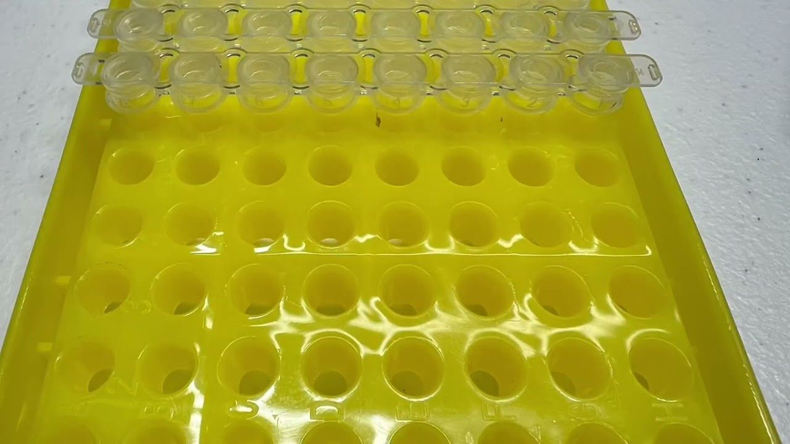
The workstation in use: how small a sample to take, and how to label the rack when it’s complete. Watch on YouTube
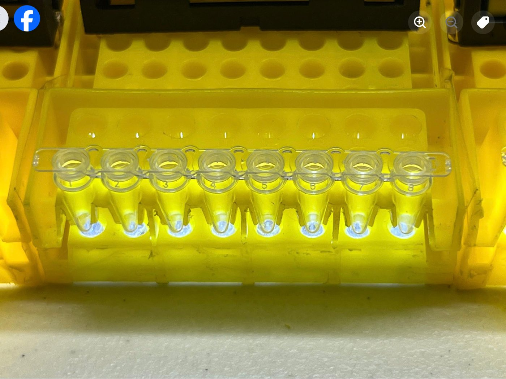
Brian Hunt · February 19, 2026
Three years ago, I got into helping out with extractions. In the beginning, I thought one of the most challenging parts was simply seeing the size of the tiny fragment of mushroom when dropping it into the tube. I had to repeatedly pull the tubes out of the platform to hold them toward the light and against different backgrounds to make out what was within.
During the winter of 2023–24, while digging in a cabinet drawer, I found a cheap LED flashlight, and a light went off in my head when I noticed that the bulbs appeared to be the same size as the holes on the tube plates. Long story short, this setup has been the key to 70,000 extractions and counting. Here is how it was made, for those who are interested.
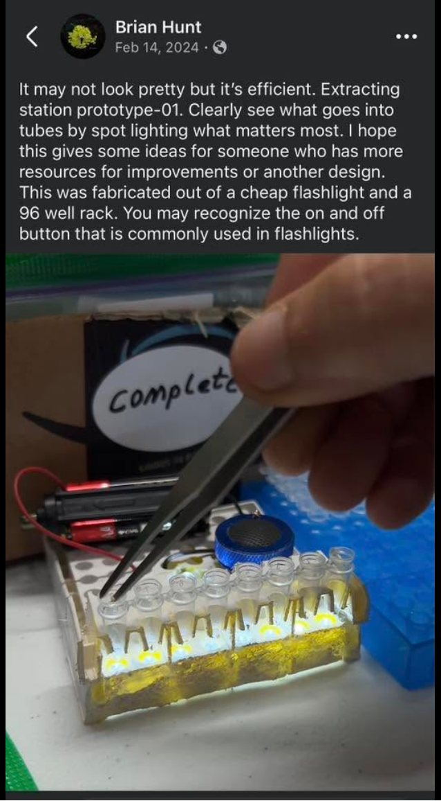
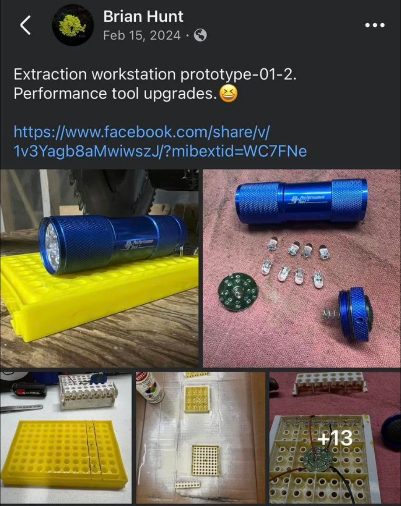
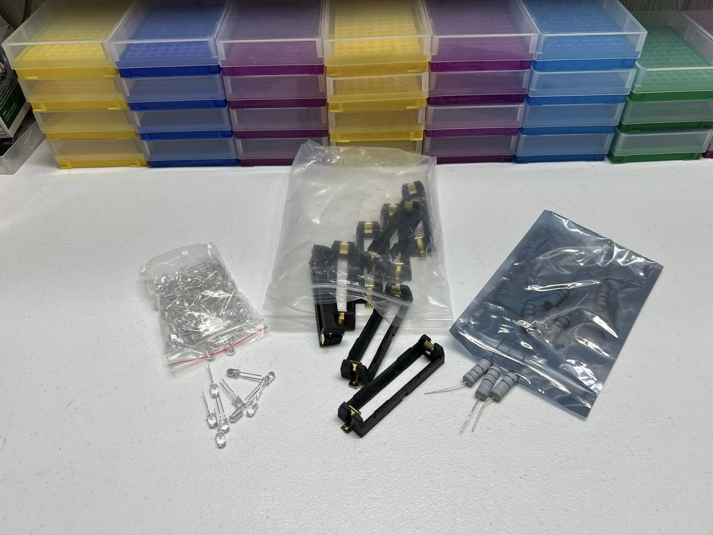
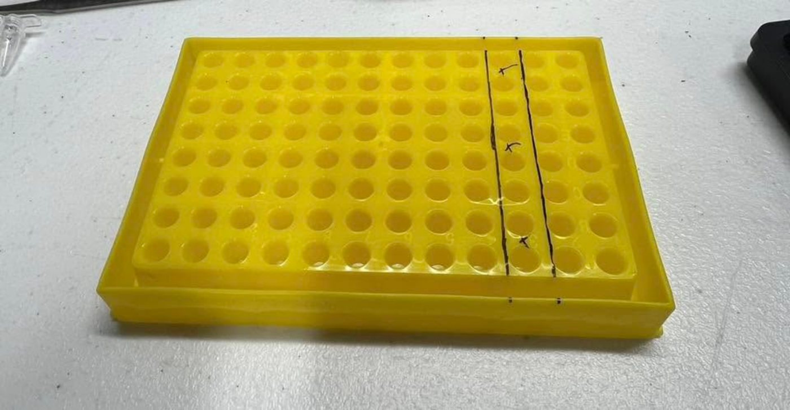
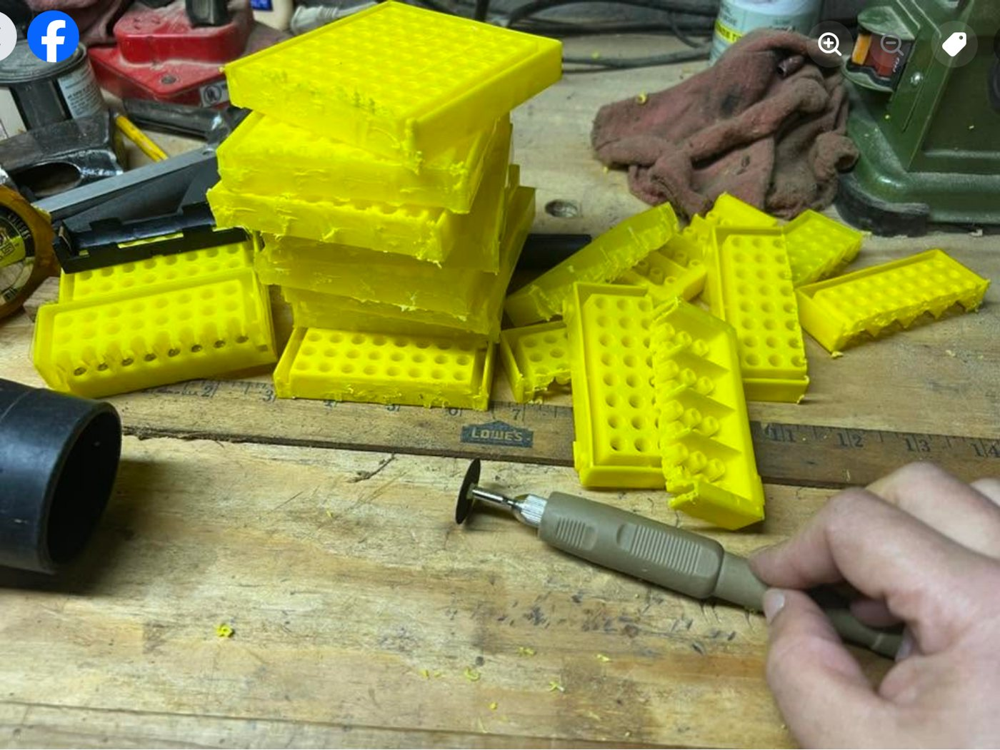
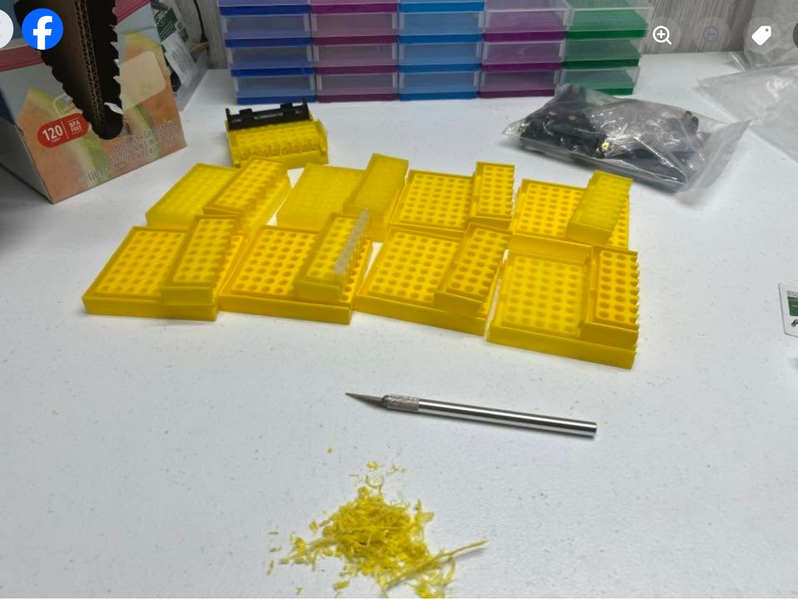
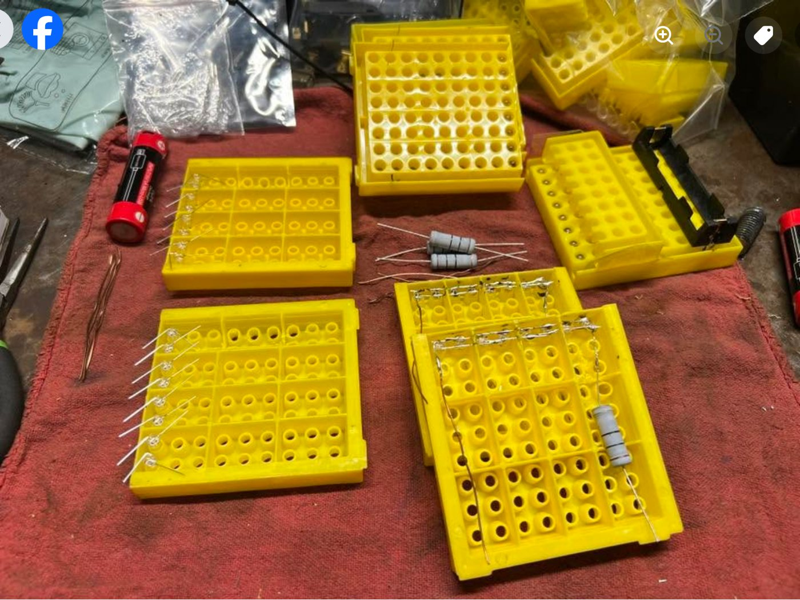
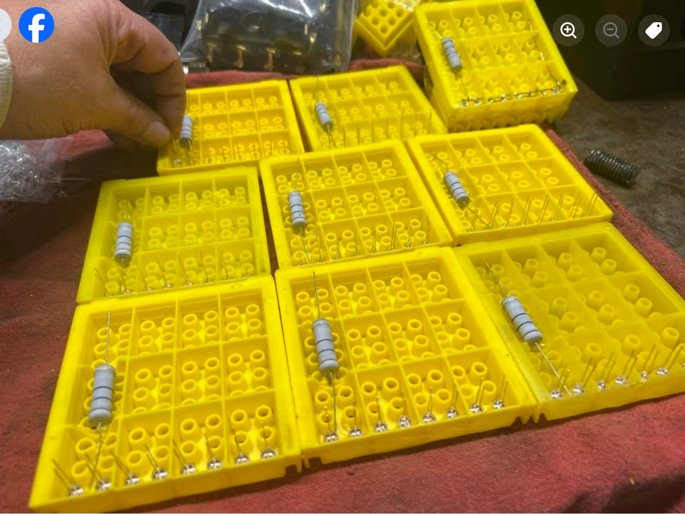
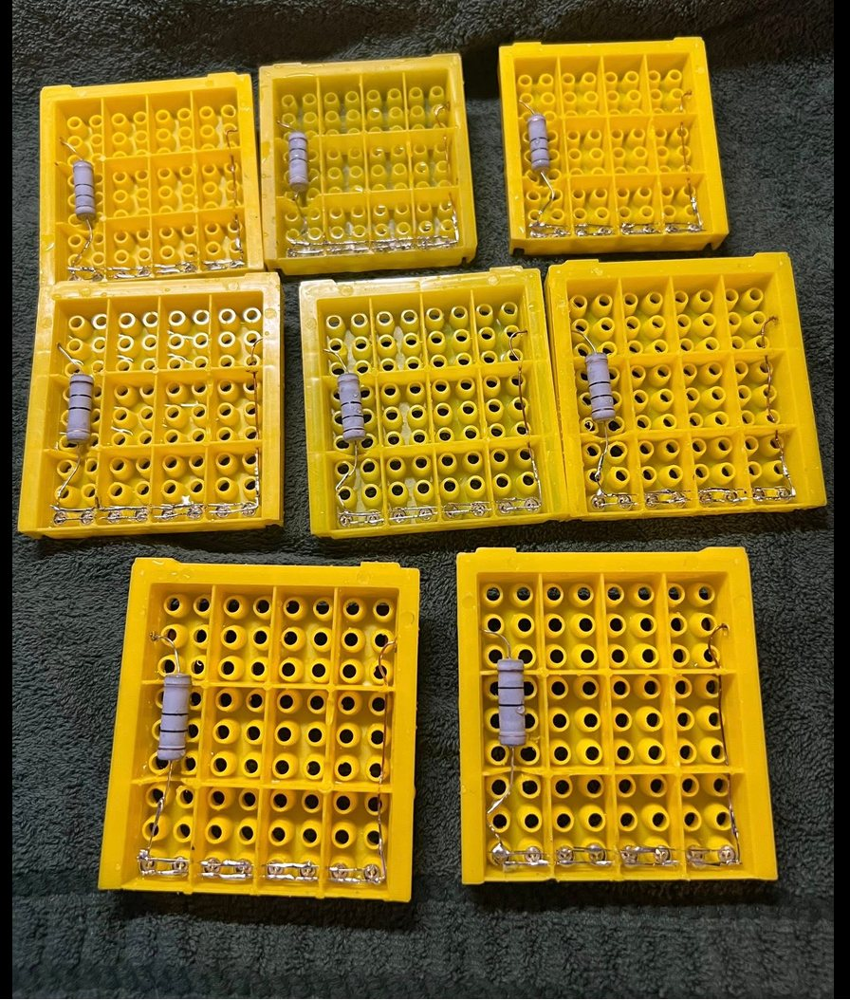
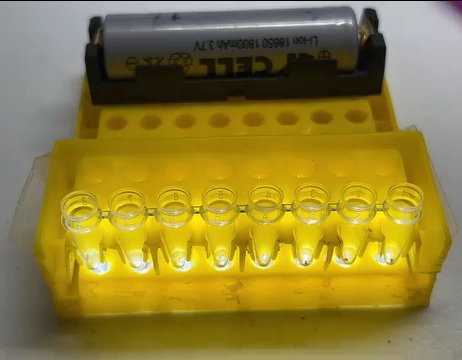
Brian Hunt · August 13, 2026
For those who are interested in taking fungal extractions: the video at the top of this page shows how small an amount needs to be taken, and how to label the PCR rack of tubes when completed. Using the new MycoMap.org “Pending Plates” function will greatly help you with this process. Fine-tip tweezers, as seen in the pictures, are perfect for this.
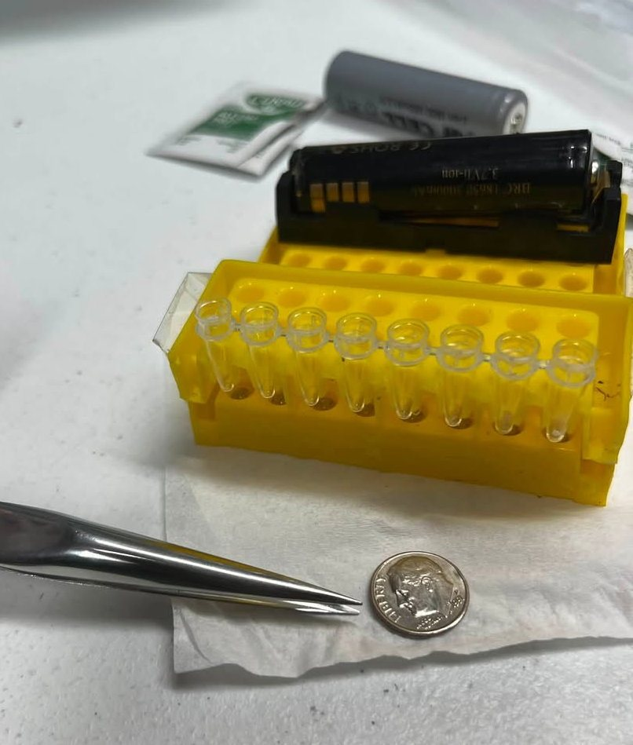
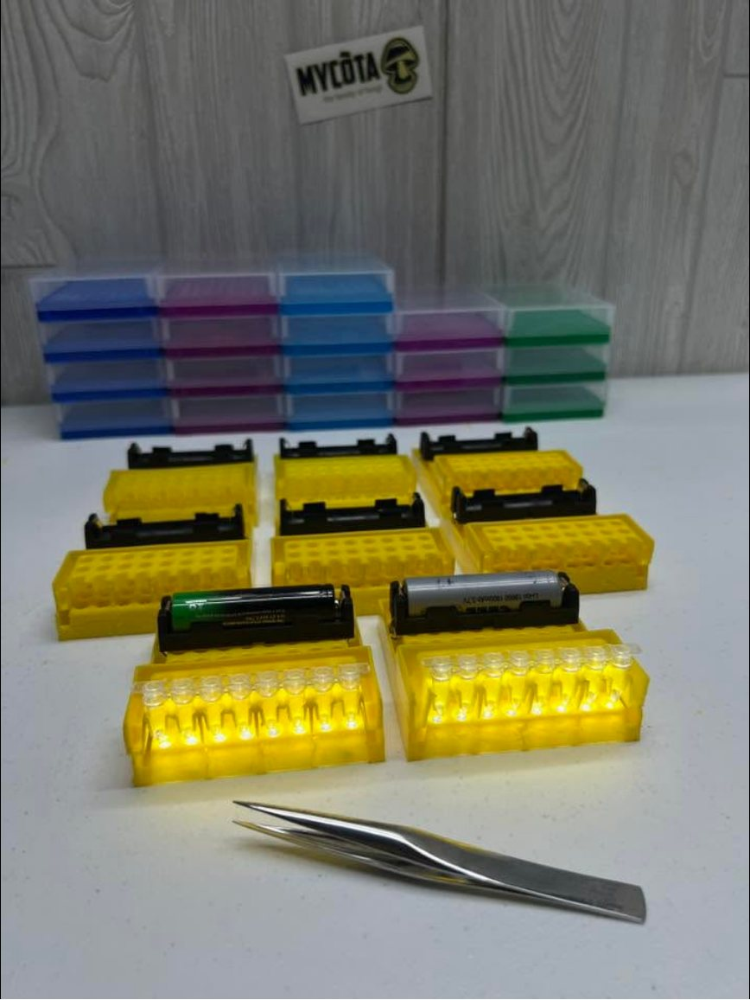
I’ve been wiping the tweezers off with a Kimwipe between samples in each set of 8. When a row of 8 is complete, I clean them with an alcohol pad. I use CURAD Alcohol Prep Pads; they are cheap, about one cent per individually wrapped pad.
I just tear open one corner so the tweezers can fit in, then slide the tweezers in with them open, so the inner sides of the tweezers rub against the pad when I pull them out. Not opening the wrapper completely helps prolong its use by retaining moisture. If it’s opened completely, the pad will dry out before I finish the whole set of 96.
I only do this to save time. Wiping with alcohol between every sample would help prevent contamination between samples. This only seems to be an issue when the lab does a second run by amplifying the first run.
A source of heat, or something else to help dry the tweezers afterwards, would speed things up if you clean them every time. In my process, there is a delay between uses that lets the tweezers dry before the next use: after the 8th extraction, I use the alcohol pad and set the tweezers aside to dry while putting the strip lids on the tubes. This seems to be just enough time for them to dry. When the tweezers aren’t completely dry, specimens will stick to them.
From the comments
Bruce WelkovichWhy not just get a few extra pairs of tweezers and rotate their use?
Brian HuntYou could, but it adds more movement and takes additional space, resulting in more time to complete the task. It may appear to be only a few seconds at the moment, but when doing multiple thousands it quickly adds up to hours of putting down and picking up another tool. This is one of the reasons I’m not for the toothpick method: it takes longer to complete a plate.
Will JohnstonThanks, Brian. What is the recommended bag? Zip or slider? Size? Should I wait to fill up a 96-hole tray, or can I send in an 8-strip?
Brian HuntThese bags are great. They’re easy to open with one hand, easier to organize, and they take up less space: recommended bags (Amazon). I believe we would prefer whole trays. If you’re missing a few rows, we can fill them in. Thanks!
Will JohnstonSo even with the 96-hole rack submission of tiny samples, you still want the associated specimens in their bags, same as before? But this method should be used when it can, to save time and help the manual bottleneck?
Brian HuntCorrect. Bag the 96 samples of your plate together and mark the bag with the same name as the plate.
Will JohnstonYour 8-strip PCR tubes are numbered 1–8 and the ones I bought are not. Does this matter?
Stephen RussellNo, just as long as we know the orientation and whether they are loaded left to right or right to left.
At a minimum, each row needs to be numbered. Some people put a number on every cell for their own organizational purposes.
Brian HuntOn the tubes I’m currently using, the numbers are really faint and only on one side. They are hard to see, but they are there. Numbering the tops down one side of the plate helps reveal whether they were worked from left to right or right to left.